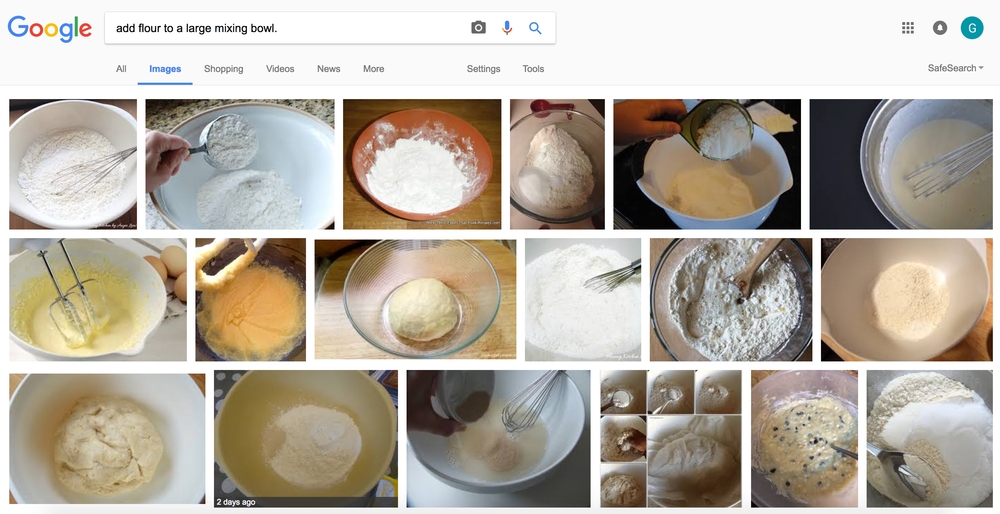

You could use all-purpose flour, but I prefer to use Italian 00 flour, which is ground extra fine and gives the pasta a silky, soft texture. I usually add 1 part semolina flour to 3 parts Italian 00 flour. The semolina adds a texture to the finished pasta that’s usually referred to as al dente. But if you prefer a more silky bite of pasta, use less semolina, and if you want more bite, use more.